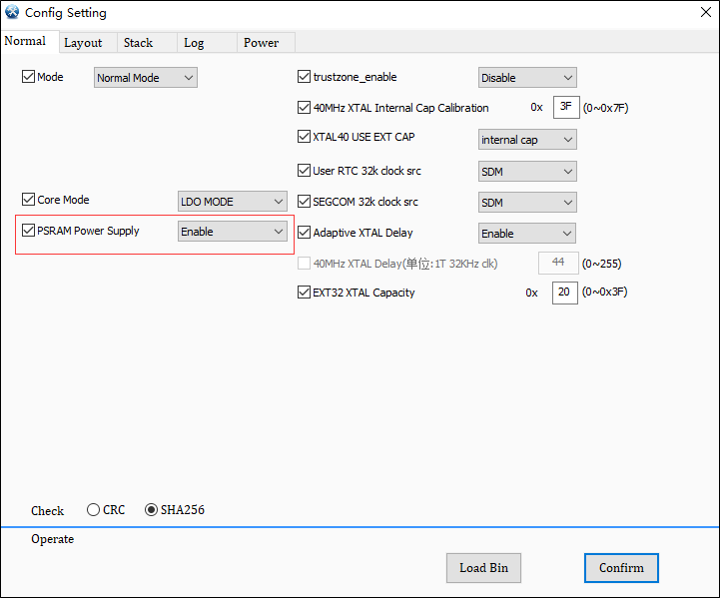

PSRAM
PSRAM 是一种兼具 DRAM 和 SRAM 优点的存储器，提供 SRAM 的易用性和 DRAM 的成本效益。相比于 SRAM，PSRAM 速度稍慢但成本和功耗更低；相比于 Flash，PSRAM 速度更快，但不具备非易失性。
PSRAM 适用于需要较快存储速度的场景。RTL87x2G 目前无法使用外置的 PSRAM，RTL87x2G 系列中部分型号包含内置的 PSRAM，PSRAM 型号为 W955D8MKY。使用时，用户可参考 RTL876x2G 对应型号的 datasheet 来确认是否支持 PSRAM。下文介绍 PSRAM 的使用方式。
初始化
Config file 中设定 PSRAM 上电选项，PSRAM Power Supply 设定为 Enable，内部会给 PSRAM 提供 1.8V 的电。否则，PSRAM 处于断电状态，不会有任何功耗产生。

Config File 设定
在
mem_config.h中定义USE_PSRAM的宏（ #define USE_PSRAM 1），定义USE_PSRAM后会自动调用psram_winbond_opi_init()来完成 PSRAM 的初始化设定。
切换高速clock
初始化后默认 PSRAM clock 为 20MHz，可以调用函数
fmc_psram_clock_switch()来切换 PSRAM clock，一般推荐直接切换到 PSRAM 80MHz，具体说明及示例如下：函数名
fmc_psram_clock_switch
函数原型
bool fmc_psram_clock_switch(PSRAM_IDX_TYPE idx, uint32_t required_mhz, uint32_t *actual_mhz)
功能描述
设定 PSRAM clock
输入参数
required_mhz：PSRAM clock 目标速度 X 2（最高设定为 160MHz，对应到 PSRAM 为 80MHz）
actual_mhz：返回实际切换到的数值，clock 切换成功的情况下 actual_mhz=required_mhz
先决条件
无
uint32_t actual_mhz; fmc_psram_clock_switch(PSRAM_IDX_SPIC1, 160, &actual_mhz);
读写操作
PSRAM 读写操作与操作普通 RAM 的方式一致，直接访问 psram 地址（memcpy，memset）无需使用 driver，示例如下：
#define PSRAM_ADDR 0x08000000
#define TEST_ADDR 0x00100000
memcpy((uint8_t *) PSRAM_ADDR, (uint8_t *) TEST_ADDR, 1024); //write
备注
PSRAM 型号仅支持 W955D8MKY，起始地址是 0x8000000，大小为 4MB。
低功耗设置
PSRAM 本身提供了两种低功耗模式：
- DPD (Deep Power Down) mode若使用 DPD mode，在进入 low power mode（DLPS）后 PSRAM 中所有的内容都会丢失。
- Hybrid Sleep mode若使用 Hybrid Sleep mode，用户可以选择 PSRAM 的部分区域在进出 DLPS 后内容不丢失，功耗数据 相对会增加。
为了用户使用方便，在系统低功耗模式中集成了 PSRAM 低功耗设定，用户可以修改以下两个部分来选择需要使用的 PSRAM 低功耗模式。
在
io_dlps.c文件中添加 #define USE_PSRAM_DEEP_POWER_HALF_SLEEP_MODE 1 来选择 Hybrid Sleep mode，否则会使用 DPD mode。若用户选择 Hybrid Sleep mode，可以修改
io_dlps.c文件中函数fmc_psram_wb_set_partial_refresh()的第二个参数，来选择进出 DLPS 后不丢失内容的区域。函数名
fmc_psram_wb_set_partial_refresh
函数原型
bool fmc_psram_wb_set_partial_refresh(FMC_FLASH_NOR_IDX_TYPE idx, FMC_PSRAM_WB_PARTIAL_ARRAY_REFRESH partial)
功能描述
设定 PSRAM 部分区域在进出低功耗模式后内容不丢失
输入参数
FMC_FLASH_NOR_IDX_TYPE：默认设定为 FMC_FLASH_NOR_IDX1
FMC_PSRAM_WB_PARTIAL_ARRAY_REFRESH：可以设定以下值
FMC_PSRAM_WB_REFRESH_FULL
FMC_PSRAM_WB_REFRESH_BOTTOM_1_2
FMC_PSRAM_WB_REFRESH_BOTTOM_1_4
FMC_PSRAM_WB_REFRESH_BOTTOM_1_8
FMC_PSRAM_WB_REFRESH_TOP_1_2
FMC_PSRAM_WB_REFRESH_TOP_1_4
FMC_PSRAM_WB_REFRESH_TOP_1_8
先决条件
无
备注
内容不丢失的区域越大 功耗数据 会越高。
使用举例：(例子中选择了 Hybrid Sleep mode，并选择 PSRAM 后半区域进出 DLPS 后内容不丢失)
#define USE_PSRAM_DEEP_POWER_HALF_SLEEP_MODE 1 #if USE_PSRAM #if USE_PSRAM_DEEP_POWER_HALF_SLEEP_MODE fmc_psram_wb_set_partial_refresh(FMC_FLASH_NOR_IDX1, FMC_PSRAM_WB_REFRESH_TOP_1_2); fmc_psram_enter_lpm(FMC_FLASH_NOR_IDX1, FMC_PSRAM_LPM_HALF_SLEEP_MODE); #else fmc_psram_enter_lpm(FMC_FLASH_NOR_IDX1, FMC_PSRAM_LPM_DEEP_POWER_DOWN_MODE); #endif #else shut_down_spic_pad_imp(FMC_FLASH_NOR_IDX1, true); #endif
功耗数据
W955D8MKY 的功耗数据如下表所示，其工作电压为 1.8V。
功耗数据 Power mode
Retention region
Current (uA)
Hybrid Sleep mode
Full Array
20
Bottom 1/2 Array
18
Bottom 1/4 Array
16
Bottom 1/8 Array
15
Top 1/2 Array
18
Top 1/4 Array
16
Top 1/8 Array
15
Deep power down mode
0~0.2
See Also
相关 API Reference 请查看：